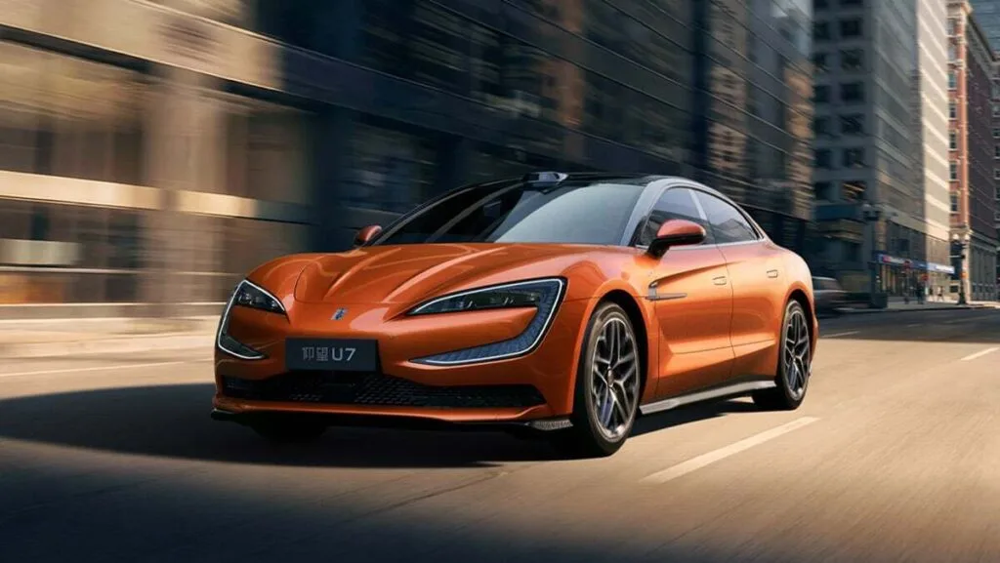
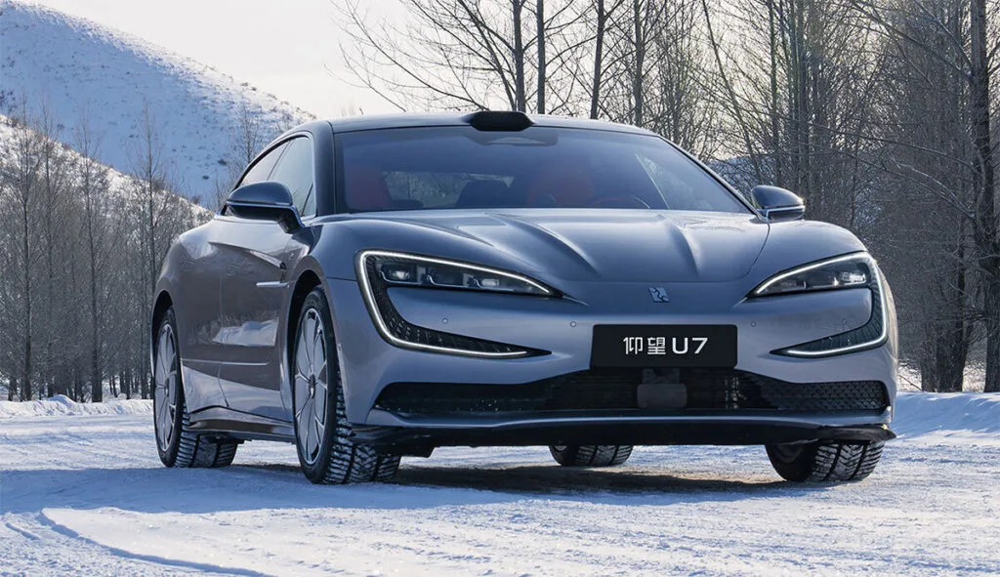

▲ 포르쉐 타이칸 터보 GT. 778마력, 1,019마력, 1,093마력이라는 세 개의 숫자를 동시에 갖고 있다
전기차 출력 숫자는 어느새 전화번호처럼 길어졌습니다. 네 자리가 흔합니다.
그런데 그 숫자를 항상 낼 수 있는 것은 아닙니다. 독일 아우토 모토 운트 슈포트에 따르면 전기차의 최고출력은 지속 가능한 정격 출력보다 최대 400% 높을 수 있습니다.
1. 하나의 차에 숫자가 셋
포르쉐 타이칸 터보 GT를 예로 들면 이렇습니다.
| 조건 | 출력 | 지속 시간 |
|---|---|---|
| 통상 | 778마력(789PS / 580kW) | 상시 |
| 런치 컨트롤 | 1,019마력(1,034PS / 760kW) | 발진 시 |
| 오버부스트 | 1,093마력(1,108PS / 815kW) | 2초 |
같은 차의 출력이 세 개입니다. 어느 것을 "이 차의 출력"이라고 부를지는 어떤 조건을 전제하느냐에 달려 있습니다.
2. GTR 21이라는 기준
포르쉐는 자사가 제시하는 타이칸 출력이 UN 국제기술규정 21호(GTR 21)에 따라 산출된 값이라고 설명합니다. 전동화 차량의 시스템 통합 출력을 정하는 표준화된 방법입니다.
다중 모터 전기차에서 특히 필요한 규정입니다. 모터별 최대 출력을 단순히 더해서 차량 총출력이라고 부를 수 없기 때문입니다.
📍 모터 출력을 왜 더할 수 없나
앞뒤 모터가 각각 400마력이라고 해서 그 차가 800마력인 것은 아닙니다.
두 모터가 동시에 최대 출력을 낼 수 있는지는 배터리가 그만큼의 전류를 동시에 공급할 수 있는지에 달려 있습니다. 시스템 전체의 병목이 어디인지에 따라 합계는 달라집니다.

▲ 고출력 전기차일수록 배터리와 냉각계의 여유가 실제 성능을 좌우한다 ⓒ Carscoops
3. 결국 열입니다
GTR 21의 시스템 출력은 지속 출력과 같은 개념이 아닙니다. 전기모터는 엄청난 전류를 순간적으로 받아들여 큰 출력을 낼 수 있지만, 결국 열이 발목을 잡습니다.
영향을 주는 요소는 여럿입니다. 배터리 온도와 충전 상태가 관여하고, 인버터와 모터, 냉각 시스템도 함께 작동합니다.
| 요소 | 작용 |
|---|---|
| 배터리 온도 | 너무 낮거나 높으면 출력 제한 |
| 충전 상태(SOC) | 잔량이 낮으면 가용 출력 감소 |
| 인버터 | 전류 변환 한계 |
| 모터 | 권선 온도 상승 |
| 냉각 | 열을 빼내는 속도가 지속 시간을 결정 |
4. 그래서 또 다른 숫자가 있습니다
그 때문에 별도의 기준이 존재합니다. UN 규정 85호(ECE R85)는 전기 구동계의 30분 최대 출력을 측정하도록 규정하고 있습니다. 평균적으로 얼마나 오래 그 출력을 유지할 수 있는지를 보는 값입니다.
브로슈어에 크게 적히는 숫자와, 서킷을 몇 바퀴 돌 때 실제로 쓸 수 있는 숫자는 이 지점에서 갈립니다.

▲ 저온에서는 배터리 출력이 제한된다. 같은 차라도 계절에 따라 체감이 달라지는 이유다 ⓒ Carscoops
5. 내연기관도 해온 일입니다
이것이 전기차만의 관행은 아닙니다. 내연기관차도 일시적인 오버부스트 수치를 앞세우는 비슷한 게임을 해왔습니다.
짧은 시간 동안만 허용되는 과급 압력을 기준으로 최고출력을 표기하는 방식입니다. 차이가 있다면 전기차 쪽의 격차가 훨씬 크다는 점입니다.

▲ 출력 경쟁이 심해질수록 표기 기준을 확인하는 일이 중요해진다 ⓒ Carscoops
6. 살 때 무엇을 봐야 하나
숫자 하나만 보고 비교하면 어긋납니다. 확인할 것은 세 가지입니다.
| 질문 | 확인 포인트 |
|---|---|
| 어떤 조건의 값인가 | 상시 / 런치 컨트롤 / 오버부스트 |
| 얼마나 유지되나 | 2초인지, 30분인지 |
| 어떤 규정인가 | GTR 21 시스템 출력 / ECE R85 30분 출력 |
일상 주행에서는 차이가 크지 않습니다. 문제가 되는 것은 반복 가속이 필요한 상황입니다. 서킷 주행이나 연속 추월처럼 출력을 계속 요구하는 구간에서 두 숫자의 간격이 그대로 드러납니다.